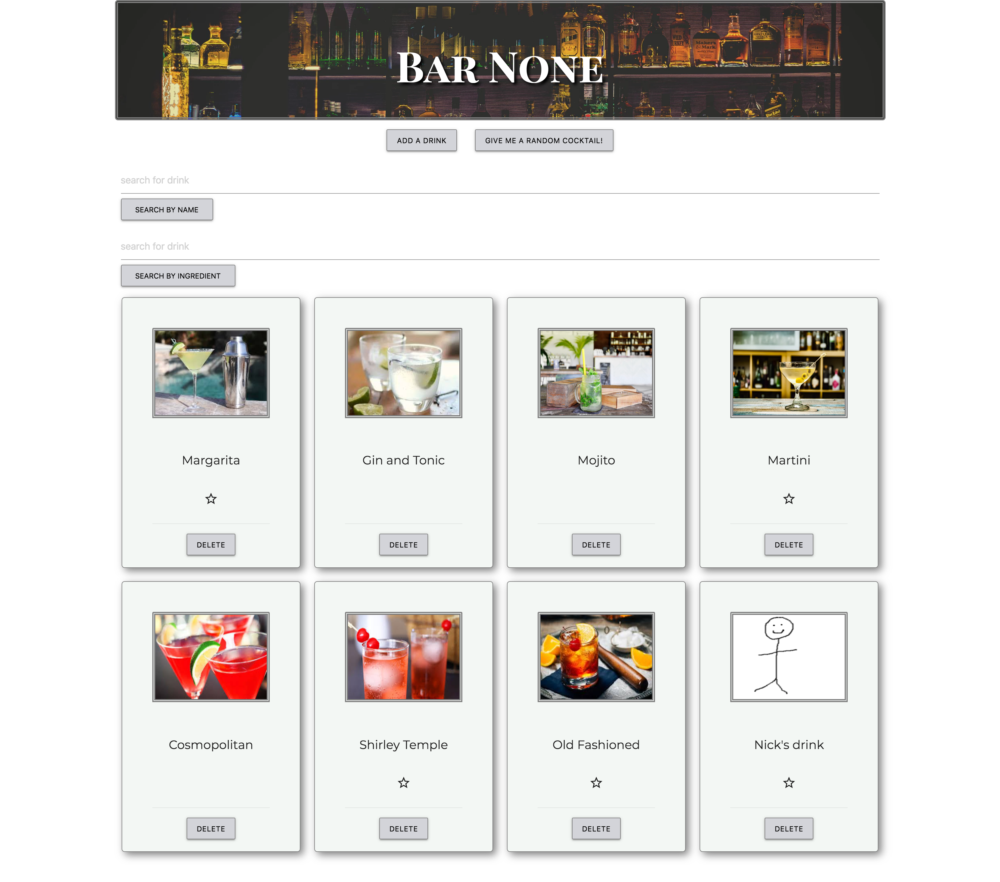

Hello, my name is Ben. I am a full stack developer living in Connecticut.
About:
I recently graduated from the web immersive program at General Assembly, where my passion for web
design really took off!
You can see my previous work history on Linked In. Outside of web design I like to travel to new
places, hike outdoors and
watch numerous forms of entertainment. I've worked on projects from front end apps to back end
servers. Languages I've worked in are javascript, ruby on rails
and react, plus many more! I am confident,
Projects
CryptSeek

GA_Project
Our first project for General Assembly!
CryptoSeek, is a cryptocurrency research tool. It allows you to search the top 100 coins in the current
market powered by the cryptoCompare api!
The website calls the api to display the top 100 coins displaying the name, symbol, current price and
current marketCap!
There are three links in the navigation that lead you to numerous pages and websites to help you learn about
the exciting world of blockchain!
Eventually links will be added to go to each coin.
My thought process was to get the data, publish in a table to show the current top 100 coins in the market.
I had to call the api with ajax, create a loop that not only created the rows and necessary data cells but
also print out the data at the same time!
At first I had this problem where my loops created all the rows with whatever the specified number was, but
it would also print out the data that same number of times. I had two loops working under one functiion. The
first was to create the rows and add them to the table body. The second loop was to create the data for the
coins. Two loops were one on top of the other. When I would execute them I had problems. For example if I
wanted it to create 100 rows of data, 100 rows would be printed, but the data would also grab 100 coins and
print those 100 times but in each row! I would have 100 rows filled with 100 coins in each row!
My soluton was to just create one loop that printed 100 rows along with the necessary data. It's a long
block of code but it works.
Future plans that I want to implement? There are a lot of things that I'd like to add. I want to polish it
up visually, There are a couple of things that I need to fix too. On the resource page the title of the
website isn't white like it's suppose too. I want to add links for every coin that is produced so when the
user clicks on them it brings them to a page bio of the coin. I want to add a search function that allows a
user to search a top 100 coin.
Bar None
Bar None


An application that allows users to search through popular cocktails and click on cards, displaying a modal
showing the ingredients and instructions for making each drink. The user can also search drinks by name or
ingredient, as well as add their own drinks to the site. Users may choose to pick a random cocktail as well.